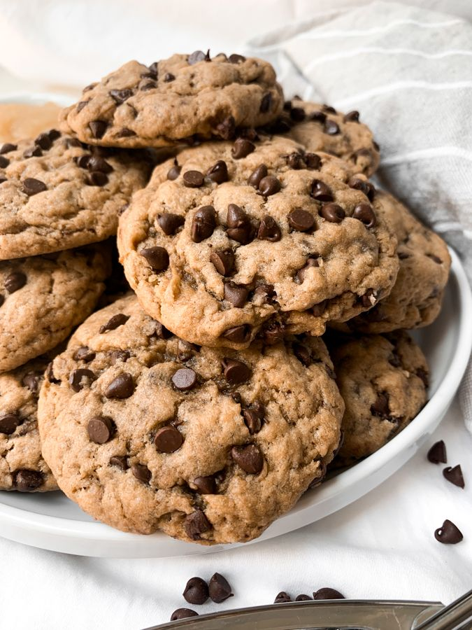

Apresentamos o Café Vintage, a escolha perfeita para quem aprecia um sabor autêntico! Feito com grãos selecionados e torrado de forma artesanal, nosso café traz um aroma marcante e um sabor rico que vai te transportar no tempo. Desfrute de uma experiência única e sofisticada a cada xícara. Experimente o Café Vintage e descubra o prazer de um café de verdade!


Delicie-se com nossos brownies fofinhos e irresistíveis, e experimente os cookies crocantes e recheados, feitos com ingredientes selecionados para um sabor inigualável!